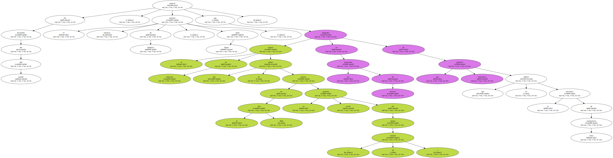
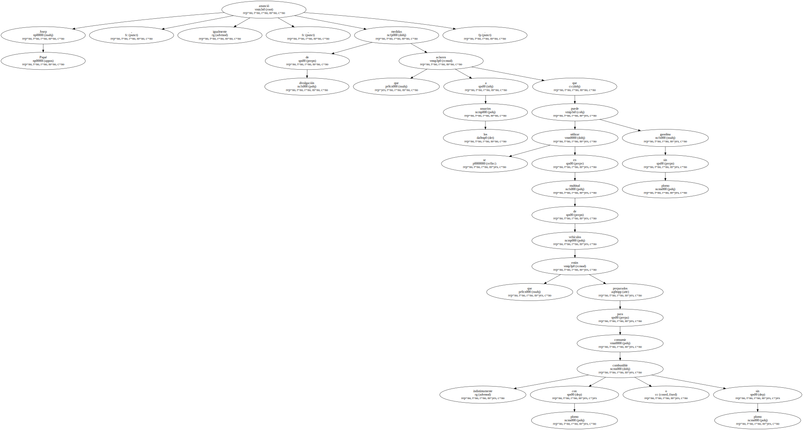
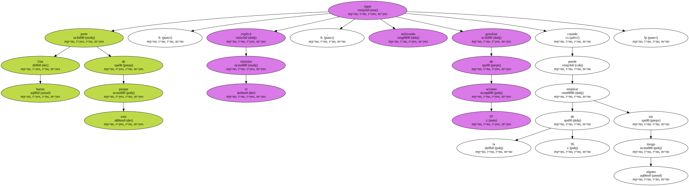
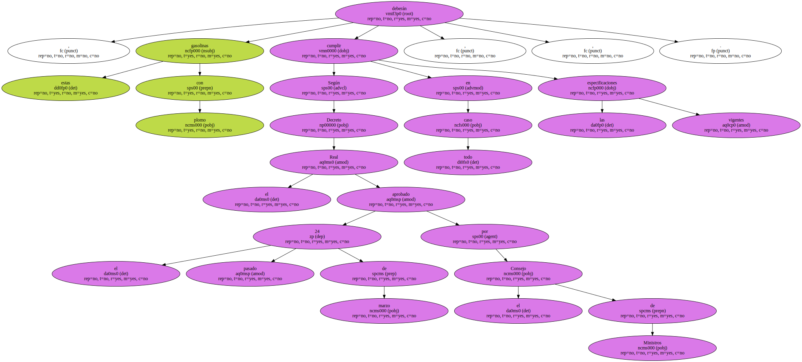
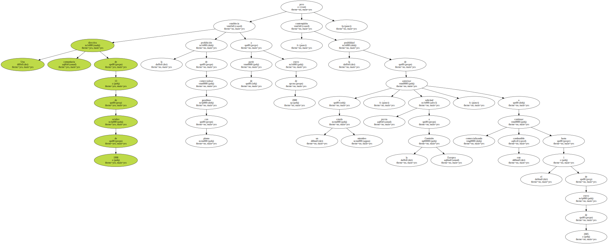
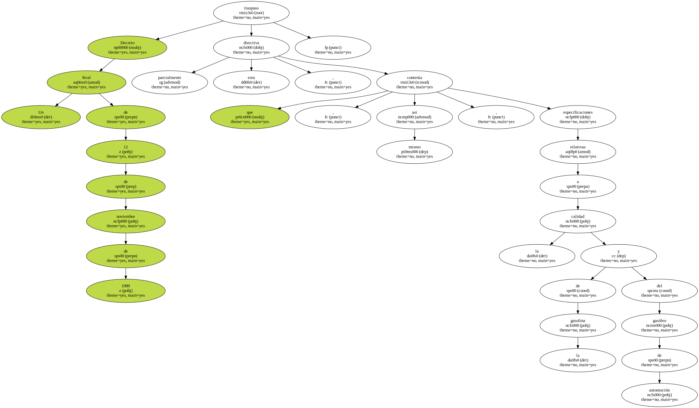
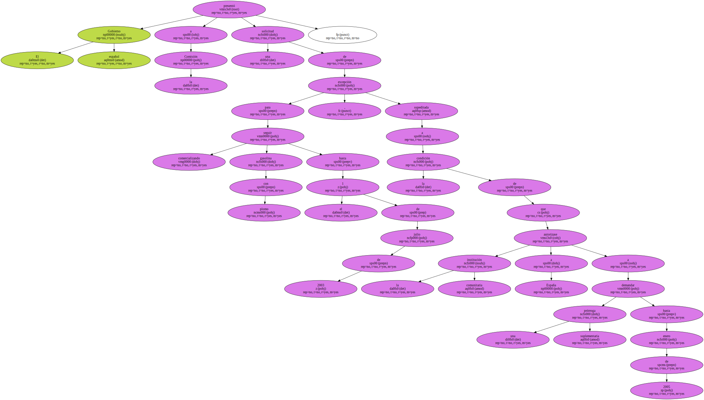
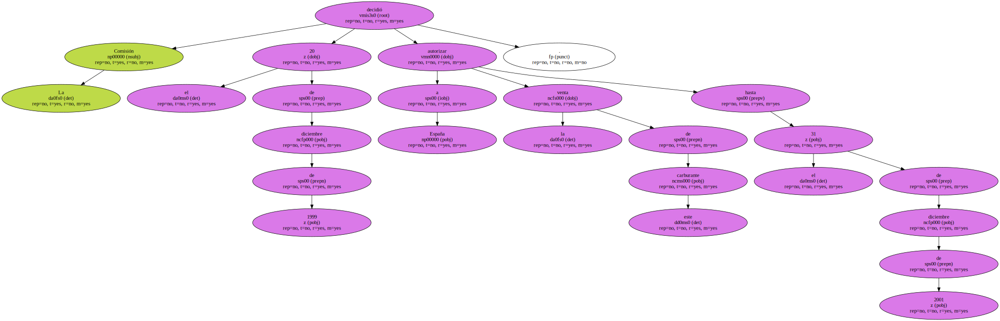
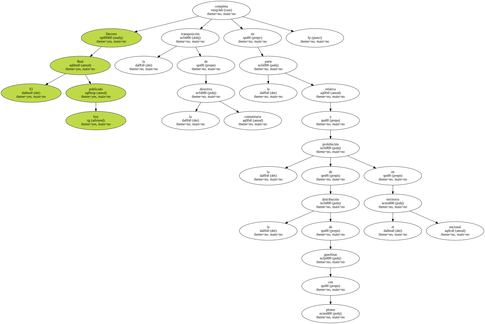

El BOE publica hoy el Real Decreto por el que se prohíbe comercializar gasolinas con plomo a partir del uno de enero de 2002 , aunque permitirá la distribución de este carburante , hasta un máximo del 0,5 por ciento de las ventas totales , para vehículos antiguos de uso especial.

En diciembre del año pasado , el entonces ministro de Industria , Josep Piqué , anunció que el usuario de vehículos que en el año 2002 no pueda utilizar la actual gasolina sin plomo ( 95 octanos ) dispondrá en las estaciones de servicio de una gasolina alternativa que no dañará la mecánica de estos automóviles.
En el 2002 se calcula que habrá en torno a 3,5 millones de automóviles que no podrán usar la actual gasolina sin plomo de 95 octanos , cuyos usuarios tendrán garantizado el suministro de una gasolina , también sin plomo , pero con los aditivos necesarios para que se produzca , principalmente en los asientos de las válvulas , el efecto lubricante del plomo.
Josep Piqué anunció , igualmente , medidas de divulgación que aclaren a los usuarios que se puede utilizar gasolina sin plomo en multitud de vehículos que están preparados para consumir indistintamente combustible con plomo o sin plomo.
Una buena parte de este parque , explicó el ministro , sigue utilizando gasolina de 97 octanos cuando puede emplear la de 95 sin riesgo alguno.
Según el Real Decreto aprobado el pasado 24 de marzo por el Consejo de Ministros , estas gasolinas con plomo deberán cumplir , en todo caso , las especificaciones vigentes.
Una directiva comunitaria de 13 de octubre de 1998 establecía la prohibición de comercializar gasolinas con plomo a partir de enero de 2000 , pero contemplaba la posibilidad de autorizar a un estado miembro , previa solicitud a la Comisión Europea , a continuar comercializando este combustible hasta el 1 de enero de 2005.
Un Real Decreto de 12 de noviembre de 1999 traspuso parcialmente esta directiva , que contenía , asi mismo , especificaciones relativas a la calidad de la gasolina y del gasóleo de automoción.
El Gobierno español presentó a la Comisión una solicitud de excepción para seguir comercializando gasolina con plomo hasta el 1 de julio de 2003 , supeditada a la condición de que la institución comunitaria autorizase a España a demandar una prórroga suplementaria hasta enero de 2005.
La Comisión decidió el 20 de diciembre de 1999 autorizar a España la venta de este carburante hasta el 31 de diciembre de 2001.
El Real Decreto publicado hoy completa la transposición de la directiva comunitaria en la parte relativa a la prohibición de la distribución de gasolinas con plomo en el territorio nacional.
